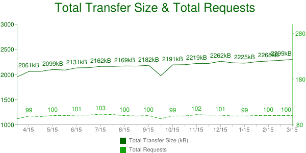
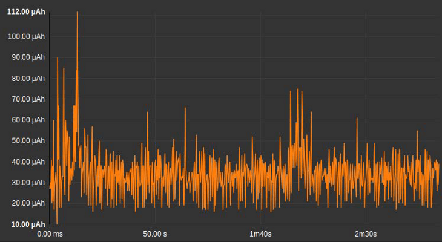
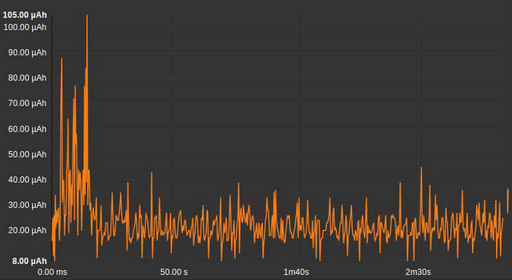

Le temps de chargement d’une page a longtemps été l’indicateur clé (et l’unique indicateur dans certains cas) de la démarche d’optimisation de sites internet. Cela a en effet aidé à l’amélioration de nombreux sites, ou tout du moins aidé à structurer le domaine d’optimisation web, devenant une métrique partagée universellement. Bien, mais sommes-nous allés aussi loin que nous l’aurions-pu ? D’autres métriques auraient-elles pu nous aider ?
Lorsque l’on aborde le sujet des métriques d’optimisation, souvent, on ne prend uniquement en compte que celles qui sont directement perceptibles par l’utilisateur. C’est pourquoi la vitesse de chargement était un critère primordial. En effet, c’est une métrique que tout le monde comprend. Je clique, j’attends un peu, et la page apparait ! Moins l’attente est longue, mieux c’est. Une grande partie de l’industrie du logiciel travaille avec ce point de vue en tête et beaucoup d’articles de blog et de documents sont écrits à ce sujet. Le « Graal » de cette recherche est d’obtenir une attente de moins d’une seconde. Cette règle empirique a bien servi pendant un temps et a aidé de nombreux sites à s’optimiser. Le modèle RAIL est un excellent exemple de ces améliorations : temps de réponse réduit, temps d’animation réduit, temps en phase idle augmenté, temps de chargement réduit… autrement dit, un bon modèle.
Cependant, nous n’en avons pas fini ensemble. Il est maintenant possible d’avoir accès à l’évolution d’un site web à travers les années sur HTTP archive, et on peut voir que la page web moyenne est de plus en plus lourde.

A la vue de ces résultats, il est donc clair que nous devons poursuivre nos efforts en termes d’amélioration de la performance des applications et sites web. Pour cela, utiliser de nouvelles métriques peut être une solution. A ce stade, nous sommes alors comme un chimiste qui essaierait d’analyser un liquide en mesurant son volume en litres, sans prendre en compte les autres critères qui l’aideraient : pH, température, texture… Quand les développeurs ont commencé à se pencher sur les notions clés des métriques pour logiciels comme le CPU ou la mémoire, ils n’ont pas pu confronter cela aux besoins des utilisateurs. ; en effet, ces derniers étant exprimés en langage commun et non en CPU load. Ces métriques sont plus techniques et invisibles pour l’utilisateur. Une consommation CPU élevée entraînera un ralentissement notoire de l’ordinateur de l’utilisateur, qui, lui, ne comprendra pas les valeurs CPU si on les lui montre. C’est à ce moment que le « temps de chargement de la page » s’est montré utile.
De plus, même pour des spécialistes, dont ceux de chez Intel, la caractérisation du CPU et de la charge de mémoire ne sont pas une tâche facile. Ils écrivent :
« L’actuelle mise en œuvre de cette métrique (le nombre rapporté par la fonctionnalité UNIX et le gestionnaire de tâches Windows) montre les portions de créneaux que le planificateur CPU du système d’opération pourrait assigner à l’exécution des programmes ou au système d’opération lui-même ; le reste est en idle. En ce qui concerne les charges de calcul limites, la métrique d’utilisation du CPU calculée de cette manière prédit la capacité restante du CPU de manière très juste pour des architectures des années 80 qui avaient alors des performances plus uniformes et prévisibles que les systèmes modernes. »
Quelle est donc la prochaine étape ? Tout d’abord, n’oubliez pas de surveiller le chargement CPU et ses utilisations ; ce n’est pas directement lié à la perception de l’utilisateur. De plus, le CPU n’est pas la seule pièce matérielle sensible dans les appareils modernes. L’écran, les cellules radio, le GPU (Graphical Processing Unit) ont, entre autres, leur propre comportement qui peut influencer les résultats. Caractériser une métrique technique est compliqué, alors le faire pour plusieurs n’est pas très réaliste pour les développeurs.
Une (autre) métrique pour tout contrôler ?
Attendez une minute ! Dans les appareils, le CPU utilise de l’énergie, la cellule radio aussi et le GPU de même… Pourquoi ne pas utiliser la consommation énergétique comme mesure unificatrice ? Prenons l’exemple de votre voiture : la vitesse est importante, oui, mais la consommation de ressources aussi, et vous y faites attention en regardant la consommation en litres par heure (ou miles par gallon si vous êtes dans le côté obscur). Si vous ne surveillez pas cela, il y a de grandes chances que vous terminiez en panne d’essence au milieu de nulle part. Maintenant, imaginez comment vous vous sentiriez si vous étiez perdu dans une ville étrangère, votre smartphone bien-aimé mais sans batterie à la main, dépourvu de l’adresse de votre prochain rendez-vous, sans aucun accès à Google Maps ou un GPS… L’angoisse.
La mesure de l’énergie est pratique courante dans le monde « réel », mais pas dans le monde logiciel. Eh bien oui, c’est un monde virtuel, qui se préoccupe vraiment de l’énergie ? Il y a cinq ans, quand nous avons commencé à discuter mesure énergétique avec des développeurs de logiciels, nous avions eu beaucoup de retours négatifs. Mais les temps ont changé (et les choses aussi). Aujourd’hui, les smartphones intègrent des sondes d’énergie, tout comme les récents centres de données, et elles sont prêtes à l’emploi pour les développeurs. Grâce aux API, n’importe quel logiciel peut retrouver cette information. Alors pourquoi n’est-ce pas plus répandu ?
Energie : qu’est-ce que le watt ?
Avant d’aller plus loin avec cette notion, récapitulons la différence entre la puissance et l’énergie.
Tout d’abord, commençons avec la puissance. Le watt (W) est une unité de puissance dérivée venant du Système International des Unités (International System of Units – SI), qui porte le nom d’un ingénieur écossais nommé James Watt (1736-1819). L’unité se définie en joule par seconde et s’utilise pour exprimer le niveau d’énergie ou transfert en fonction du temps.
La puissance est donc une unité de travail par unité de temps. Elle est souvent confondue avec l’énergie, qui, elle, est exprimée en Watt.Heure (Wh). Prenons un exemple, une ampoule avec une puissance nominale de 20 W consommera 20 Wh en une heure, et 40 Wh en deux heures. Attention à ne pas confondre les Wh avec les Watt par Heure (W/h), utilisé par exemple pour évaluer l’accroissement de production d’une centrale électrique.
L’énergie est un élément extrêmement important dans le cadre d’une évaluation comportementale d’un logiciel, car la puissance est une métrique qui évolue en permanence ; tandis que son intégration dans le temps, résultant en énergie consommée, montre la consommation qui découle de ce process pendant son fonctionnement.
Enfin, sur appareils mobiles, il est possible que vous entendiez des gens parler de consommation de puissance ou d’énergie en Ampere.Heures. C’est très commode étant donné que la capacité de la batterie est elle-même exprimée en Ah. Donc, si vous savez ce qu’a consommé votre logiciel en Ah, vous pouvez en déduire le pourcentage de perte de batterie. Alors, oui, nous faisons cela régulièrement, et pour faciliter la communication nous appelons cette consommation « consommation énergétique ». Cette pratique est courante et admise à partir du moment où vous vous rappelez que les Ah ne sont pas une unité de puissance ou encore d’énergie, mais plutôt une unité de charge électrique.
Maintenant que nous sommes sur la même longueur d’onde, continuons.
Comment un développeur peut mesurer la consommation énergétique d’un logiciel ?
De nos jours, de plus en plus de compteurs énergétiques sont intégrés dans les plateformes matérielles. Chez Android par exemple, il est possible d’utiliser un API (à partir d’Android 5 seulement) pour avoir l’information matérielle concernant la consommation énergétique. Et c’est relativement simple:
BatteryManager batteryManager =
(BatteryManager)context.getSystemService(Context.BATTERY_SERVICE);
mEnergyNWH = BatteryManager.getLongProperty(BatteryManager.BATTERY_PROPERTY_ENERGY_COUNTER);Certaines entreprises fournissent des sondes énergétiques, des outils existants simplifiés ou encore des API aux développeurs qui utilisent leur solution ; c’est ce que nous faisons ici, chez GREENSPECTOR.
Tous les logiciels consomment-ils la même quantité d’énergie ?
Pour faire court, non. Dans le cadre du projet WebEnergyArchive.com, nous avons mesuré la consommation de pages web en chargement sur un smartphone. La première conclusion fût que la consommation énergétique est un élément très variable. En moyenne, un site internet consomme aux alentours de 10 mAh. Si l’on prend une capacité basique de batterie, soit environ 3,200 mAh (comme un Nexus 6), cela veut dire que l’on peut charger 320 sites avant le déchargement complet de la batterie. Cependant, si l’on fait ces calculs pour les 20 sites qui consomment le moins (avec une moyenne de 6.8 mAh) ou avec les 20 sites qui consomment le plus (environ 16.0 mAh), le résultat est le suivant : dans le meilleur des cas, la capacité est de 470 sites, contre seulement 200 pour les sites plus gourmands. Dit autrement, l’autonomie de batterie varie entre 467 minutes et 200 minutes, selon la réalisation des sites web. La manière dont un site web est codé a un impact important sur l’autonomie de la batterie d’un utilisateur.
Il est aussi possible de vérifier le rythme de déchargement d’un site web : quelle quantité de batterie est consommée par seconde ? En moyenne, le taux de déchargement est de 202 µAh/s pour le chargement de la page et 143 µAh/s pour la période idle qui suit (qui est notre scenario standard, et vous seriez surpris à quel point l’idle en dit long sur la qualité de votre application). Nous avons aussi mesuré la vitesse de déchargement de l’appareil sans aucun navigateur ouvert et cela indiquait 100 µAh/s. Charger un site web double donc le rythme de déchargement l’appareil. Le même site moyen, en idle, consomme lui aussi une importante quantité d’énergie (143 – 100 = 43 µAh/s). Cela démontre l’importance que d’optimiser la phase idle aussi, et ne pas se contenter uniquement du chargement de pages. Pour cela, il faudra peut-être délier des données de la mémoire, limiter les scripts pendant l’idle (ou les arrêter), etc.
Vous trouverez juste dessous une illustration d’une application Android, l’idle en premier plan, entraînant une vitesse de déchargement importante :

Versus la même application en arrière-plan :

Mesurer la consommation énergétique nous a permis d’avoir des informations clés concernant les points d’optimisation. Cela a aussi confirmé le fait que nous devions continuer à optimiser le chargement des pages, mais aussi travailler sur l’idle de ces pages.
Et ensuite ?
Mesurez, mesurez et mesurez ! La culture de la performance devrait être connue de tout développeur. S’intégrant dans cette culture, la mesure de l’énergie joue un rôle important. Le domaine est nouveau, les outils jeunes, mais vous devez commencer quelques part. Chez GREENSPECTOR, nous le faisons déjà et je le recommande fortement. Cependant, le modèle de performance actuel doit être amélioré. Voici la réflexion sur le modèle RAIL proposé par Paul Irish et Paul Lewis : Ajoutez B (batterie) et M (mémoire), deviennent BLAIMR, PRIMAL… C’est pas mal. Tout comme vous pilotez un « budget performance », vous pouvez avoir une « budget énergie ». Par exemple, vous pouvez poser les limites comme suivent :
- Le logiciel ne doit pas doubler la vitesse de déchargement de l’appareil
- Le logiciel ne doit pas augmenter le rythme de déchargement de plus de 10% quand il est en idle…
Trouvez et configurez vos propres budgets, faites le de manière progressive, apprenez-en davantage, améliorez les… Cela prend du temps. Pour débuter, vous pouvez déjà mesurer dans un premier temps. Regardez les courbes, vous en apprendrez déjà beaucoup sur votre logiciel.